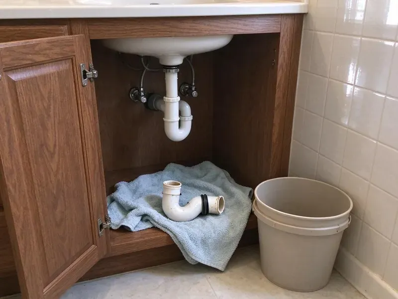

Water Heater Repair in Lake Havasu City, AZ
Hard Arizona water is tough on water heaters. Our plumbers in Lake Havasu City, AZ flush sediment, replace failed parts and get your hot water back fast.
- Same-Day Hot Water Service
- Gas, Electric and Tankless
- Parts Stocked on Trucks
- Honest Repair or Replace Advice
Hot water back today with expert water heater repair in Lake Havasu City, AZ.
Call now and a plumber with the right parts can usually be there within hours.
Fast, Honest Water Heater Repair in Lake Havasu City, AZ From Licensed Plumbers
CVR Plumbing repairs tank and tankless water heaters in Lake Havasu City from brands like Rheem, A.O. Smith, Bradford White and State. Our trucks carry thermocouples, gas valves, elements, thermostats and relief valves so most repairs are done on the spot.
Our expertise includes:
- Thermocouple, flame sensor and gas control valve replacement
- Upper and lower element and thermostat testing on electric tanks
- Sediment flushing, anode rod swaps and relief valve replacement

Additional Plumbing Repair Services in Lake Havasu City, AZ
We offer expert plumbing repair services across Lake Havasu City, AZ to stop leaks, clear blockages, and keep every fixture working the way it should.


Customers
Why Choose CVR Plumbing for Water Heater Repair in Lake Havasu City, AZ?
A water heater repair should restore hot water for years, not weeks. We test every component in the system so the real cause gets fixed the first time.
- Right Parts Onboard, Common parts for major brands ride on every truck, which cuts out return trips.
- Honest Recommendations, We compare repair cost against tank age and condition before suggesting anything.
- Safety Checked, Venting, gas connections and relief valve discharge are inspected on every call.
Citywide Coverage
From older neighborhoods with 40-gallon gas tanks to newer homes with high-efficiency or tankless units, our plumbers cover all of Lake Havasu City. You get the same quick response wherever you live.
Experienced Team
Our plumbers repair water heaters every day and know the quirks of each major brand, from Rheem pilot assemblies to Bradford White flammable vapor sensors. That experience means faster diagnosis and fewer guesses.
Safety-First Approach
Water heaters involve gas, electricity and pressurized hot water, so we follow code on every repair. We check the temperature and pressure relief valve, discharge line, venting draft and seismic or strapping requirements where they apply.
Trusted Certified Lake Havasu City Plumbing Services Professionals
At CVR Plumbing, we take pride in providing licensed, certified plumbing services throughout Lake Havasu City, AZ. Backed by leading industry credentials, our experienced plumbers combine technical skill with genuine customer care. Whether it is repair, installation, or maintenance, we follow strict safety and quality standards to deliver lasting results you can trust.
Call Us Now PHCC Plumbing Contractor Recognition
PHCC Plumbing Contractor Recognition Better Business Bureau (BBB) Accreditation
Better Business Bureau (BBB) Accreditation Angi Certified Pro
Angi Certified Pro ISO 9001 Quality Management Certification
ISO 9001 Quality Management CertificationExpert Water Heater Repair Services in Lake Havasu City, AZ
Gas Water Heater Repair in Lake Havasu City
Gas water heaters most often fail at the thermocouple, flame sensor, igniter or gas control valve. We test each part, clean the burner and pilot assembly and check for proper draft at the vent. Pilots that light and then go out usually point to a weak thermocouple or a clogged flame arrestor screen. Most of these repairs are completed in under two hours.

Electric Water Heater Repair in Lake Havasu City, AZ
Electric tanks use two heating elements and two thermostats, and any of the four can fail. Hard water causes scale to pile up on the lower element until it burns out. We test resistance and voltage, replace the failed element or thermostat and reset the high limit. If the breaker keeps tripping, we trace the short before restoring power.
Tankless Water Heater Repair in Lake Havasu City
Navien, Rinnai, Noritz and Rheem tankless units show error codes that help us narrow the problem quickly. Common causes include scale on the heat exchanger, a dirty inlet filter, a failed flow sensor or an igniter issue. We descale with a pump and vinegar or approved solution, clean filters and replace sensors. Regular descaling is especially important with Arizona water.
Leaking Water Heater Repair in Lake Havasu City, AZ
Not every leak means a dead tank. Drips from the relief valve, drain valve or supply connections are repairable for a modest cost. A leak from the tank body or the bottom seam, however, usually means the inner lining has failed. We pinpoint the source, protect your floors and give you a straight repair or replace recommendation.
Sediment Flush and Noise Repair in Lake Havasu City
Popping, rumbling or crackling sounds usually mean a thick layer of sediment is trapping water under it and overheating the tank bottom. We drain and flush the tank, break up scale with repeated fills and check the drain valve for blockage. Flushing restores capacity, lowers energy use and helps extend tank life. We often recommend yearly flushes for homes on hard water.
Anode Rod Replacement in Lake Havasu City, AZ
The anode rod sacrifices itself so the steel tank does not rust. In hard water it can be eaten away within a few years. We pull and inspect the rod, then install a magnesium, aluminum or powered anode depending on your water and any odor problems. A rotten egg smell from hot water often goes away with the right anode choice.
Emergency Water Heater Repair in Lake Havasu City
A tank that is actively leaking or a relief valve that keeps discharging needs prompt attention. We answer emergency calls day and night, shut down the unit safely and stop the water. If the heater can be repaired, we fix it on the spot. If it cannot, we can often install a replacement the same or next day.

Repair vs Replace Cost Comparison in Lake Havasu City, AZ
A typical repair costs $150 to $600, while a new standard tank installed often runs $1,400 to $2,800 depending on size, fuel and code updates. If your heater is under eight years old and the tank is sound, repair is usually the better value. Past ten years, or with a leaking tank, replacement often saves money over time. We give you both numbers so you can decide.
Water Heater Repair Near Me in Lake Havasu City, AZ
If you are searching for water heater repair near me, you want a plumber who can come today with the right part already on the truck. CVR Plumbing stocks parts for the brands we see most in local homes. That means hot water back sooner and fewer follow-up visits.
Local plumbers understand how hard water and garage heat affect water heaters here. We tailor our advice on flushing, anode rods and expansion tanks to the water you actually have. Our goal is a repair that lasts.
CVR Plumbing at a Glance
- Fully licensed plumbing team covering Lake Havasu City, AZ
- 24/7 emergency service with same-day scheduling
- Upfront, flat-rate pricing before work begins
- 4.8-star rated by 713+ Arizona customers
Lake Havasu City Map
Lake Havasu City Information
- Population
- 59,257
- Area codes
- 928/520/480
- Service area
- Lake Havasu City and communities within 40 miles
- Nearby
- Prescott Valley, Surprise, Buckeye, Peoria
Very hard water and hot garages put extra stress on water heaters in Lake Havasu City, AZ, so sediment buildup and worn parts cause failures sooner than in many places, and timely repair protects both comfort and the tank.
Expert Services
Trust our professionals for reliable CVR Plumbing solutions in Lake Havasu City, AZ.
Our Specialized Plumbing Services in Lake Havasu City, AZ
At CVR Plumbing, we provide a complete range of plumbing services across Lake Havasu City, AZ. From leak detection to full system installations, our team ensures fast, precise, and affordable service for both residential and commercial properties. Explore our core services below:


How Our Water Heater Repair Process Works in Lake Havasu City, AZ
We keep water heater repair simple so you can get back to hot showers quickly.
Request a Quote
Call (928) 470-9009 and describe what your water heater is doing, including the brand and age if you know them. We schedule a visit, usually the same day.
Test and Diagnose
Your plumber tests the burner or elements, controls, venting and tank condition. You receive a flat price for the repair along with an honest view of the tank's remaining life.
Repair and Verify
We replace the failed part and run the heater through a full cycle. Gas connections are leak tested and the relief valve is checked before we leave.
Frequently Asked Questions About Water Heater Repair in Lake Havasu City
Most water heater repairs run between $150 and $600. Thermocouple and element replacements sit at the lower end, while gas control valves and tankless sensors cost more. We quote the exact price before starting.
Tank water heaters often last 8 to 12 years, but hard water can shorten that without regular flushing. Tankless units can last 15 to 20 years with yearly descaling.
A leak from a valve or fitting is urgent but usually fixable. A leak from the tank body can worsen quickly, so shut off the water supply and power or gas and call us right away.
With Arizona's hard water, once a year is a good rule for tank heaters. Tankless units should be descaled about once a year as well, or more often if you have no water softener.
Yes. Our labor is warrantied and replacement parts carry the manufacturer's warranty. If the same repair fails within the warranty period, we come back and make it right.
Some handy homeowners do, but mistakes with gas or 240-volt wiring can be dangerous. A licensed plumber also checks venting and relief valve operation, which DIY repairs often skip.
Most repairs are finished in one visit lasting one to two hours. If a special part must be ordered, we usually have it within one to three business days.
That smell typically comes from a reaction between bacteria in the water and the magnesium anode rod. Swapping to an aluminum zinc or powered anode and flushing the tank usually solves it.
What People Are Saying About Our Plumbing Experts?

Laura S.
I scheduled a water heater replacement, and the team made the process smooth and affordable. The new unit works perfectly, and they cleaned up after completing the job.
Water Heater Replacement · Buckeye, AZ
Patricia H.
We had a slab leak that two other companies could not find. CVR Plumbing located it in under an hour, explained our options, and the price matched the quote to the dollar.
Slab Leak Repair · Buckeye, AZ
Robert G.
The trenchless sewer replacement saved our front yard. They walked us through the camera inspection footage first so we knew exactly what we were paying for.
Sewer Line Replacement · Yuma, AZ
Daniel K.
A pipe burst at 11 pm and they actually answered. The plumber showed up within the hour, shut everything down, and had us back to normal the next morning. Could not ask for more.
Emergency Plumbing · Lake Havasu City, AZ
Emily R.
I called CVR Plumbing for plumbing repair, and the technician was fast, polite, and thorough. They explained the problem clearly and fixed it the same day. I will definitely hire them again. Highly recommended!
Plumbing Repair · Buckeye, AZJames P.
Our commercial plumbing system had a leak under the sink, and CVR Plumbing handled it professionally. The plumbers arrived quickly and restored everything without disruption to our customers.
Commercial Plumbing · Peoria, AZ